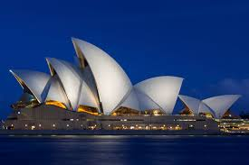
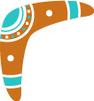

Explore Sydney
Sydney is famous for the Sydney Opera House, Harbour Bridge, Bondi Beach and vibrant city life.

Visitors can enjoy ferry rides, shopping, coastal walks and amazing waterfront dining.

Sydney is famous for the Sydney Opera House, Harbour Bridge, Bondi Beach and vibrant city life.

Visitors can enjoy ferry rides, shopping, coastal walks and amazing waterfront dining.